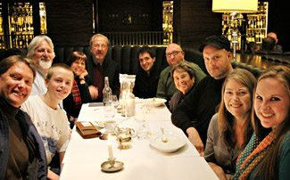
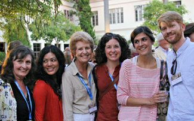
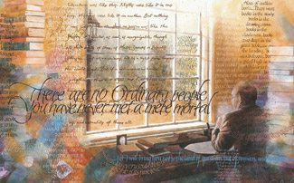

Sign Up for Our Email List
Sign up now to be added to our mailing list.
Receive emails about Foundation news, events, programs and more!
Join Us in Our Mission
Join us in our strategic mission of outreach to the world of higher education and the arts!
Give to the Foundation
Donate your car or other vehicle
Support The Kilns
Support the ongoing programs at the C.S. Lewis Study Centre at The Kilns, C.S. Lewis' beloved home in Oxford.